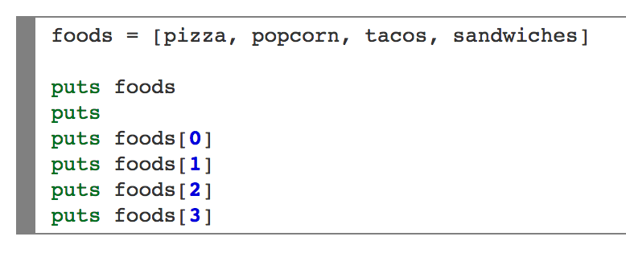
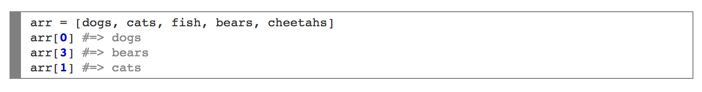
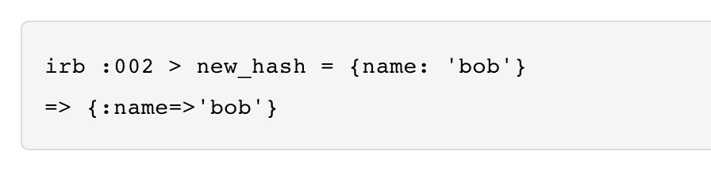

Intro:
Welcome to this weeks segment of…
Bum! Bum! Bum!
Ray guns and hashtags!!
...wait...oh that's not what it's called?... sorry guys someone fooled with the teleprompter...
Arrays and Hash! Yay!
Ok so, arrays. What are they? Well I can surely say that it is our way of telling Ruby, "Hey, so Ruby, I have a bunch of values I need you to take, and put into one of your fabulous lists. Sounds good? Ok cool. Oh and please make it in an order. Thanks Ruby, you're awesome!" Ruby then does this in the form of an array, which is just an ordered list using values that point to other related values or arrays.

This list can be literally filled with anything your heart desires like cream, or even other arrays; kind of like Inception, sadly without Leo DiCaprio, Tom Hardy or Joseph Gordon-Levitt. But in any fashion feel free to use Strings, Integers or even Floats. They'll act just as a civilized variable should.
Now remember when you were a kid, and you were taught you had ten fingers? Well what if I said you really had nine? I'm just kidding, but with arrays and the way that they are counted, lets forget the old 'starting from one'. Little old zero never gets in on the fun. So instead we will start off counting with 0 then 1,2,3,4... so on and so forth. Using a simple syntax '#=>', you can search through your lovely list of things.

The awesome thing about arrays, is that you can also edit your list simply by, adding/deleting values, organizing your values or even combing your favorite array.
Now let's move on to Hashes, they are like arrays cousin. See they are a lot like arrays in that they are also a list but instead they are unorganized, meaning they have no particular order. In a hash, the items in your list aren't in a row, they are just sort of all over, and you can use any object to refer to an item, not just a number. You would use hashes if you want to store things in a list that don't necessarily fit into any order.

Why use one over the other? Well really both are very useful and are used quite often. Each one serves a specific purpose, if you just want to call on something without remembering where it is because its order doesnt matter use a hash. If the order matters use an array.
Fun TO-DO : Learn how to include code snippets for Ruby in html as well so it's beautifully formatted!